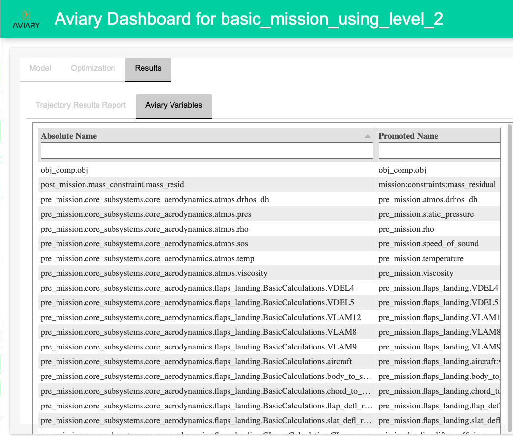

Outputs and How to Read Them#
Dashboard#
Aviary provides the ability to create a dashboard that lets the user easily browse between the reports and files that are generated during an Aviary run. The dashboard runs locally inside a Web-browser.
The dashboard is organized into 3 sections: Model, Optimization, and Results.
The dashboard assumes these locations for the various reports that are embedded into the dashboard.
Section |
Report name |
Location |
|---|---|---|
Model |
Inputs |
./reports/name_of_run_script/inputs.html |
Model |
Debug Input List |
./input_list.txt |
Model |
Debug Input List |
./output_list.txt |
Model |
N2 |
./reports/name_of_run_script/n2.html |
Model |
Trajectory Linkage Report |
./reports/name_of_run_script/traj_linkage_report.html |
Optimization |
Driver Scaling Report |
./reports/name_of_run_script/driver_scaling_report.html |
Optimization |
Total Coloring Report |
./reports/name_of_run_script/total_coloring.html |
Optimization |
Optimization Report |
./reports/name_of_run_script/opt_report.html |
Optimization |
SNOPT Output (similarly for other optimizers) |
./reports/name_of_run_script/SNOPT_print.out |
Optimization |
Desvars, cons, opt plot |
Derived from Case Recorder file specified by |
Results |
Trajectory Results Report |
./reports/name_of_run_script/traj_results_report.html |
Results |
Aviary Variables |
Derived from Case Recorder file specified by |
As an example of the workflow for the dashboard, assume that the user has run an Aviary script, test_full_mission_solved_level3, which records both the Problem final case and also all the cases of the optimization done by the Driver. (To record both the Problem final case and also the Driver optimization iterations, the user must make use of the optimization_history_filename option in the call to run_aviary_problem.)
python test_full_mission_solved_level3
In this example, the case recorder files are named problem_final_case.db and driver_cases.db, respectively. So after the run is completed, the user could run the dashboard using:
aviary dashboard test_full_mission_solved_level3 --problem_recorder=problem_final_case.db --driver_recorder=driver_cases.db
The resulting dashboard would look something like this:

Accessing Variables#
How to get print/access any variable as an output.
Reports and Outputs#
Default Reports#
Each standard Aviary run generates several output files. Which output files are generated depend on the run options. There is always a sub-folder reports/<name of run script> that contains a few HTML files.
driver_scaling_report.htmlThis is an OpenMDAO output. After all design variables, objectives, and constraints are declared and the problem has been set up, this report presents all the design variables and constraints in all phases as well as the objectives.
It lists design variables and constraints and objectives in three different tables. It contains the following columns: name, size, indices, driver value and units, model value and units, ref, ref0, scaler, adder, etc. It contains a Jacobian Info matrix too.
More details can be found at openmdao scaling.
inputs.htmlThis is a sortable and filterable inputs report of input variables in different phases.
It contains the following columns: absolute name, source name, source is IVC, source is DV, units, shape, tags, val, min val, and max val. Here,
IVCis the abbreviation ofIndepVarCompandDVis the abbreviation of “design variable”.
n2.htmlThis is an OpenMDAO model hierarchy and an N-squared diagram in the shape of a matrix, representing functional or physical interfaces between system elements. It can be used to systematically identify, define, tabulate, design, and analyze functional and physical interfaces.
More information can be found at OpenMDAO’s N2 Basics and N2 Details. There is a tutorial on YouTub e.
opt_report.htmlThis is the OpenMDAO Optimization Report. It writes a summary of results of an optimization run.
OpenMDAO reference is at Optimization Report.
total_coloring.htmlOpenMDAO computes a coloring for the total jacobian.
More information can be found at Simultaneous Total Derivative Coloring For Separable Problems and Simultaneous Coloring of Approximated Derivatives.
traj_linkage_report.htmlThis is a dymos linkage report. It provides a report detailing how phases are linked together via constraint or connection. It can be used to identify errant linkages between fixed quantities.
traj_results_report.htmlThis file contains timeseries and phase parameters in different tabs.
We will show details of the above reports in the onboarding docs.
OpenMDAO has a reports system which will generate reports when you run your model. More on OpenMDAO reports system can be found here.
Database Output Files#
There is an SQLite database output. By default, it is aviary_history.db. It can be used to rerun your case though we do not detail that here. Users can write separate Python script to create user customized outputs and graphs. We will show how to use the this database to create user’s customized graph in the onboarding docs.
Relevant Reports#
There is an optimizer output. If SNOPT is the optimizer, SNOPT_print.out is generated. The SNOPT output is a detailed output of the optimizer performance. New users likely will want to exercise caution when viewing this output, as it includes some advanced information.
If IPOPT is the optimizer, IPOPT.out is generated. If SLSQP is the optimizer and pyOptSparseDriver is the driver, SLSQP.out is generated.
If debug_mode is set to True, input_list.txt and output_list.txt are generated.
You may notice some warning messages in the Aviary output. Frequently seen warnings are:
PromotionWarning: Issued when there is ambiguity due to variable promotion (an OpenMDAO warning).
RuntimeWarning: Issued for warnings about dubious runtime features (a Python warning).
UserWarning: Issued for warnings about potential OpenMDAO, dymos, and/or Aviary problems.
DerivativesWarning: Issued when the approximated partials or coloring cannot be evaluated as expected (an OpenMDAO warning).
Users should pay attention accordingly.
When a problem is setup, we can add an argument check=True. This is an OpenMDAO feature (see Setup Your Model for more information). If we do, a bunch of checks will be performed. You will see those checks on the command line.
After a model is run, a check_partials() method can be applied and results are printed to the command line. This helps us make sure all of our partial derivatives are correct. We refer users to OpenMDAO’s document Working with Derivatives
Using Finite Difference or Complex Step.
When Aviary is run, some messages are printed on the command line and they are important. More details are in the onboarding docs.
In addition, users can add their own outputs.
We will cover more details on all those outputs when we show concrete examples in the onboarding docs.
Discuss when these reports are relevant and in what situations they would be used.